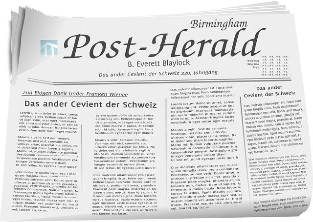

O hotel ficou no topo da lista da premiação "Post Herald´s Choice Awards"
A votação é feita a partir dos próprios hóspedes que dão notas aos hotéis que conheceram durante suas viagens. A avaliação inclui localização, limpeza, atendimento, conformo e custo-benefício. Somando todos esses critérios, o hotel em Gramado obteve nota máxima em mais de 1.500 avaliações.
O Chalé Hotel é inspirado nas construções francesas e tem em suas acomodações arquitetura típica europeia, além de muitos detalhes em dourado – esbanjando requinte e luxo em suas 50 suítes.
© Copyright 2000-2020 Chalé Hotel